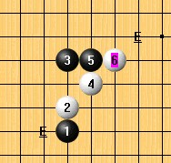
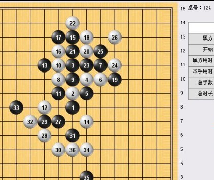

大寒星列传（妖刀九传之一）
#1 <font color="Fuchsia">大寒星列传（妖刀九传之一）</font> 作者：26 发表时间：2008-10-19 20:01:12
5的两打选择哪里？有什么结论？
［本站用户 竹子 于 2009-3-2 22:57:29 花5个金币送您鲜花一朵］
#2 Re:大寒星弱4 作者：刀魂 发表时间：2008-11-2 15:52:36
黑基本胜、、、、#3 Re:大寒星弱4 作者：失落刀 发表时间：2008-11-15 0:07:52
等强人出现：）#4 Re:大寒星列传（妖刀九传之一） 作者：失落刀 发表时间：2008-11-30 14:14:11
我还没有找到结论的5.大家交流下。
#5 Re:大寒星列传（妖刀九传之一） 作者：木月 发表时间：2008-12-1 21:28:30
哇，这个基本上是很复杂地，哎，老拉，看不懂了，顶一个#6 Re:大寒星列传（妖刀九传之一） 作者：潇洒 发表时间：2008-12-1 21:35:01
 木月大师来了。。瞻仰一下。。
木月大师来了。。瞻仰一下。。
#7 Re:大寒星列传（妖刀九传之一） 作者：失落刀 发表时间：2008-12-1 21:39:56
木月来啦。。。口水中。。。#8 Re:大寒星列传（妖刀九传之一） 作者：浪人痴痴 发表时间：2008-12-1 21:43:40
瞻仰木大虾...................................
#9 Re:大寒星列传（妖刀九传之一） 作者：失落刀 发表时间：2008-12-3 19:45:23
最强4的5，对我来说可以走的5.
#10 Re:大寒星列传（妖刀九传之一） 作者：失落刀 发表时间：2008-12-3 19:55:47
6团。
#11 Re:大寒星列传（妖刀九传之一） 作者：失落刀 发表时间：2008-12-3 20:28:16
#12 Re:大寒星列传（妖刀九传之一） 作者：失落刀 发表时间：2008-12-3 20:29:16
解决了几个弱5.大家共同参与撒。
#13 Re:大寒星列传（妖刀九传之一） 作者：26 发表时间：2008-12-4 10:56:46
一个6的变化。
#14 Re:大寒星列传（妖刀九传之一） 作者：失落刀 发表时间：2008-12-4 18:02:46
终于找到了一个胜5.供大家参考。
#15 Re:大寒星列传（妖刀九传之一） 作者：越狱行辕 发表时间：2008-12-5 3:39:16
大侠#16 Re:大寒星列传（妖刀九传之一） 作者：流连江南水乡 发表时间：2008-12-7 13:18:25
看看
#17 Re:大寒星列传（妖刀九传之一） 作者：失落刀 发表时间：2008-12-15 19:47:33

黑方：明教-14
白方：明教-22
#18 Re:大寒星列传（妖刀九传之一） 作者：失落刀 发表时间：2009-2-26 8:24:25
龙儿(黑) VS 清缘(白)—40手白抓

#19 Re:大寒星列传（妖刀九传之一） 作者：失落刀 发表时间：2009-2-28 15:45:49
#20 Re:大寒星列传（妖刀九传之一） 作者：五柳先生 发表时间：2009-2-28 15:49:45
不错
#21 Re:大寒星列传（妖刀九传之一） 作者：失落刀 发表时间：2009-2-28 15:55:23
#22 Re:大寒星列传（妖刀九传之一） 作者：失落刀 发表时间：2009-2-28 15:59:52
#23 Re:大寒星列传（妖刀九传之一） 作者：陨落之城 发表时间：2009-6-17 15:30:36
=======上图对应的爱五子棋谱代码如下，以便你拆解：========
h8h9h11i8g9f10g10g11f8f9
======================================================
=======上图对应的爱五子棋谱代码如下，以便你拆解：========
h8h9h11i8g9f10g10g11f8i9
======================================================
=======上图对应的爱五子棋谱代码如下，以便你拆解：========
h8h9h11i8g9f10g10g11f8e8
======================================================
 这几个10有高人帮忙解决一下吗？
这几个10有高人帮忙解决一下吗？
#24 Re:大寒星列传（妖刀九传之一） 作者：安娜制作所 发表时间：2009-9-19 13:01:32
这个8怎么应好一点啊!=======上图对应的爱五子棋谱代码如下，以便你拆解：========
h8i7h5h6i6j7j8i8k7i9h9g7f7g6g8i10i11h7f5k10j9j10h10i5
======================================================
#25 Re:大寒星列传（妖刀九传之一） 作者：家族粉丝 发表时间：2010-6-27 15:15:33
=======上图对应的爱五子棋谱代码如下，以便你拆解：========
h8h9h11j9g10f9g9g8
======================================================
#26 Re:大寒星列传（妖刀九传之一） 作者：家族粉丝 发表时间：2010-6-27 15:16:02
=======上图对应的爱五子棋谱代码如下，以便你拆解：========
h8h9h11j9g10g9f9e8
======================================================
#27 Re:大寒星列传（妖刀九传之一） 作者：家族粉丝 发表时间：2010-6-27 15:17:24
=======上图对应的爱五子棋谱代码如下，以便你拆解：========
h8h9h11j9g9f10
======================================================
#28 Re:大寒星列传（妖刀九传之一） 作者：家族粉丝 发表时间：2010-6-27 15:19:17
=======上图对应的爱五子棋谱代码如下，以便你拆解：========
h8h9h11j10g10f9g9g11f10e11g7
======================================================
=======上图对应的爱五子棋谱代码如下，以便你拆解：========
h8h9h11j10g10f9g9g8
======================================================
#29 Re:大寒星列传（妖刀九传之一） 作者：家族粉丝 发表时间：2010-6-27 15:19:50
=======上图对应的爱五子棋谱代码如下，以便你拆解：========
h8h9h11j10g9f10
======================================================
#30 Re:大寒星列传（妖刀九传之一） 作者：家族粉丝 发表时间：2010-6-27 15:22:57
=======上图对应的爱五子棋谱代码如下，以便你拆解：========
h8h9h11h10i8g9
======================================================
=======上图对应的爱五子棋谱代码如下，以便你拆解：========
h8h9h11h10i8g8
======================================================
=======上图对应的爱五子棋谱代码如下，以便你拆解：========
h8h9h11h10i8j8
======================================================
#31 Re:大寒星列传（妖刀九传之一） 作者：家族粉丝 发表时间：2010-6-27 15:23:18
=======上图对应的爱五子棋谱代码如下，以便你拆解：========
h8h9h11h10i9j10
======================================================
#32 Re:大寒星列传（妖刀九传之一） 作者：家族粉丝 发表时间：2010-6-27 15:23:39
=======上图对应的爱五子棋谱代码如下，以便你拆解：========
h8h9h11h10i10j9
======================================================
#33 Re:大寒星列传（妖刀九传之一） 作者：失落刀 发表时间：2010-10-8 22:39:48
=======上图对应的爱五子棋谱代码如下，以便你拆解：========
h8h9h11i10g11g8j11i11i9f7e6g7g9f10f8a1e7b1h7
======================================================
这个13怎么杀？
#34 Re:大寒星列传（妖刀九传之一） 作者：wrwak 发表时间：2010-10-9 13:44:31
楼上的你还在这IWZQ啊? 佩服你们的毅力#35 Re:大寒星列传（妖刀九传之一） 作者：好学 发表时间：2010-10-11 2:54:34
=======上图对应的爱五子棋谱代码如下，以便你拆解：========
h8h9h11i10g11g8j11i11i9f7e6g7g9f10h7f12
======================================================
#36 Re:大寒星列传（妖刀九传之一） 作者：失落刀 发表时间：2011-2-11 20:18:35
=======上图对应的爱五子棋谱代码如下，以便你拆解：========
h8h9h11h10i8g9j9i10k10l11j11i12a1f9
======================================================
这个7如何？
#37 Re:大寒星列传（妖刀九传之一） 作者：失落刀 发表时间：2011-2-11 23:02:40
=======上图对应的爱五子棋谱代码如下，以便你拆解：========
h8h9h11j9f9i8g10i12g8h7k10g9
======================================================
#38 Re:大寒星列传（妖刀九传之一） 作者：失落刀 发表时间：2011-2-11 23:03:08
=======上图对应的爱五子棋谱代码如下，以便你拆解：========
h8h9h11j9f9i9g9f10
======================================================
#39 Re:大寒星列传（妖刀九传之一） 作者：失落刀 发表时间：2011-2-11 23:03:47
=======上图对应的爱五子棋谱代码如下，以便你拆解：========
h8h9h11j9f9g10
======================================================
#40 Re:大寒星列传（妖刀九传之一） 作者：失落刀 发表时间：2011-2-13 19:49:34
=======上图对应的爱五子棋谱代码如下，以便你拆解：========
h8h9h11j10g10f9g9g8
======================================================
#41 Re:大寒星列传（妖刀九传之一） 作者：失落刀 发表时间：2011-2-13 20:59:57
=======上图对应的爱五子棋谱代码如下，以便你拆解：========
h8h9h11j10g10f9g9g8f10e11e10h10g7f7
======================================================
#42 Re:大寒星列传（妖刀九传之一） 作者：失落刀 发表时间：2011-2-13 21:04:21
=======上图对应的爱五子棋谱代码如下，以便你拆解：========
h8h9h11j10g10f9g9g8f10e11e10h10f7
======================================================
#43 Re:大寒星列传（妖刀九传之一） 作者：失落刀 发表时间：2011-2-13 21:53:42
=======上图对应的爱五子棋谱代码如下，以便你拆解：========
h8h9h11j10f10a1g10
======================================================
黑胜。
#44 Re:大寒星列传（妖刀九传之一） 作者：失落刀 发表时间：2011-2-14 0:21:11
=======上图对应的爱五子棋谱代码如下，以便你拆解：========
h8h9h11j9f10a1g9
======================================================
黑胜。
#45 Re:大寒星列传（妖刀九传之一） 作者：失落刀 发表时间：2011-2-14 0:23:22
=======上图对应的爱五子棋谱代码如下，以便你拆解：========
h8h9h11h10a1i11o1i10o15i9a15i8
======================================================
［此帖子已被 失落刀 在 2011-2-20 15:34:46 编辑过］
［此帖子已被 失落刀 在 2011-3-6 22:09:57 编辑过］
#46 Re:大寒星列传（妖刀九传之一） 作者：失落刀 发表时间：2011-2-14 20:32:50
=======上图对应的爱五子棋谱代码如下，以便你拆解：========
h8h9h11h10l8
======================================================
解答正确者，送威望。
48、49楼解决。
［此帖子已被 失落刀 在 2011-2-19 14:13:25 编辑过］
#47 Re:大寒星列传（妖刀九传之一） 作者：失落刀 发表时间：2011-2-14 20:34:15
=======上图对应的爱五子棋谱代码如下，以便你拆解：========
h8h9h11h10i6
======================================================
解答正确者，送威望。
50楼解决。
［此帖子已被 失落刀 在 2011-2-19 14:14:17 编辑过］
#48 Re:Re:大寒星列传（妖刀九传之一） 作者：失落缘 发表时间：2011-2-14 21:59:30
=======上图对应的爱五子棋谱代码如下，以便你拆解：========
h8h9h11h10l8i8
======================================================
［ 失落刀 于 2011-2-14 22:04:38 时奖励此帖[金币加 100 威望加1］另附送金币300.
［此帖子已被 失落刀 在 2011-2-14 22:05:11 编辑过］
#49 Re:Re:Re:大寒星列传（妖刀九传之一） 作者：空恨社小仙 发表时间：2011-2-14 22:19:34
另一种杀法 大寒星垃圾五另一个必胜六.rar
大寒星垃圾五另一个必胜六.rar［ 失落刀 于 2011-2-14 23:28:46 时奖励此帖[金币加 100 威望加1］另附送金币300.
［此帖子已被 失落刀 在 2011-2-14 23:29:16 编辑过］
#50 Re:Re:大寒星列传（妖刀九传之一） 作者：失落缘 发表时间：2011-2-14 22:41:55
=======上图对应的爱五子棋谱代码如下，以便你拆解：========
h8h9h11h10i6i10
======================================================
大寒星垃圾02.rar［ 失落刀 于 2011-2-14 23:29:39 时奖励此帖[金币加 100 威望加1］另附送金币300.
［此帖子已被 失落刀 在 2011-2-14 23:30:20 编辑过］
#51 Re:大寒星列传（妖刀九传之一） 作者：失落刀 发表时间：2011-2-15 0:16:09
=======上图对应的爱五子棋谱代码如下，以便你拆解：========
h8h9h11h10i7
======================================================
解答正确者，送威望。
#52 Re:大寒星列传（妖刀九传之一） 作者：失落刀 发表时间：2011-2-15 0:17:43
=======上图对应的爱五子棋谱代码如下，以便你拆解：========
h8h9h11h10k9a1k10
======================================================
解答正确者，送威望。
#53 Re:大寒星列传（妖刀九传之一） 作者：死劲哭 发表时间：2011-2-15 9:54:15
=======上图对应的爱五子棋谱代码如下，以便你拆解：========
h8h9h11h10i7g9i9g7
======================================================
=======上图对应的爱五子棋谱代码如下，以便你拆解：========
h8h9h11h10k9g9i9j10i10i11j12j9
======================================================
=======上图对应的爱五子棋谱代码如下，以便你拆解：========
h8h9h11h10k10g10i10j9i9i8j7j10
======================================================
不一定对
#54 Re:大寒星列传（妖刀九传之一） 作者：失落刀 发表时间：2011-2-17 19:12:56
=======上图对应的爱五子棋谱代码如下，以便你拆解：========
h8h9h11h10i12
======================================================
解答正确者，送威望。
#55 Re:大寒星列传（妖刀九传之一） 作者：失落刀 发表时间：2011-2-17 19:13:24
=======上图对应的爱五子棋谱代码如下，以便你拆解：========
h8h9h11h10i13
======================================================
解答正确者，送威望。
56楼已经解决。
［此帖子已被 失落刀 在 2011-2-19 14:12:03 编辑过］
#56 Re:Re:大寒星列传（妖刀九传之一） 作者：空恨社小仙 发表时间：2011-2-19 1:18:41
 扫下看看有漏洞没？8.rar
扫下看看有漏洞没？8.rar［此帖子已被 空恨社小仙 在 2011-2-19 1:29:43 编辑过］
［ 失落刀 于 2011-2-19 9:16:39 时奖励此帖[金币加 100 威望加1］
#57 Re:大寒星列传（妖刀九传之一） 作者：失落刀 发表时间：2011-2-19 14:04:12
=======上图对应的爱五子棋谱代码如下，以便你拆解：========
h8h9h11i9e8
======================================================
57楼问题，
解答正确者，送威望。
65楼已经解决。
［此帖子已被 失落刀 在 2011-2-27 18:42:19 编辑过］
#58 Re:大寒星列传（妖刀九传之一） 作者：失落刀 发表时间：2011-2-19 14:05:09
=======上图对应的爱五子棋谱代码如下，以便你拆解：========
h8h9h11i9e11
======================================================
58楼问题，
解答正确者，送威望。
63楼已解决。
［此帖子已被 失落刀 在 2011-2-27 13:26:20 编辑过］
#59 Re:大寒星列传（妖刀九传之一） 作者：吐血刀 发表时间：2011-2-27 11:25:48
=======上图对应的爱五子棋谱代码如下，以便你拆解：========
h8h9h11i11g9f10
======================================================
推荐个7。。。
#60 Re:Re:大寒星列传（妖刀九传之一） 作者：空恨社小仙 发表时间：2011-2-27 13:01:38

#61 Re:大寒星列传（妖刀九传之一） 作者：失落刀 发表时间：2011-2-27 13:08:52
［此帖子已被 失落刀 在 2011-2-27 13:10:39 编辑过］
#62 Re:Re:Re:大寒星列传（妖刀九传之一） 作者：空恨社小仙 发表时间：2011-2-27 13:10:04
［此帖子已被 空恨社小仙 在 2011-2-27 13:13:16 编辑过］
［ 失落刀 于 2011-2-27 13:13:35 时奖励此帖[金币加 100 威望加1］
#63 Re:Re:大寒星列传（妖刀九传之一） 作者：空恨社小仙 发表时间：2011-2-27 13:22:26
败五01.rar
［ 失落刀 于 2011-2-27 13:26:31 时奖励此帖[金币加 100 威望加1］
#64 明教圣火令2011版 作者：空恨社小仙 发表时间：2011-2-27 16:32:02

［ 失落刀 于 2011-2-27 16:58:26 时奖励此帖[金币加 100 威望加1］
#65 Re:Re:大寒星列传（妖刀九传之一） 作者：空恨社小仙 发表时间：2011-2-27 18:34:14
败五02.rar
［ 失落刀 于 2011-2-27 18:40:09 时奖励此帖[金币加 100 威望加1］金币1000.
［此帖子已被 失落刀 在 2011-2-27 18:41:21 编辑过］
#66 Re:大寒星列传（妖刀九传之一） 作者：失落刀 发表时间：2011-3-6 22:09:22
=======上图对应的爱五子棋谱代码如下，以便你拆解：========
h8h9h11i8g10a1g11
======================================================
这个4必败，杀法吐血刀论坛战里有提示。
#67 Re:大寒星列传（妖刀九传之一） 作者：失落刀 发表时间：2011-3-6 22:15:57
=======上图对应的爱五子棋谱代码如下，以便你拆解：========
h8h9h11i11g8
======================================================
一打必胜。（图一）
=======上图对应的爱五子棋谱代码如下，以便你拆解：========
h8h9h11h10
======================================================
一打二打无结论（图二）
=======上图对应的爱五子棋谱代码如下，以便你拆解：========
h8h9h11i10
======================================================
一打二打无结论（图三）
=======上图对应的爱五子棋谱代码如下，以便你拆解：========
h8h9h11i9
======================================================
一打二打无结论（图四）
Ps:其他4败。